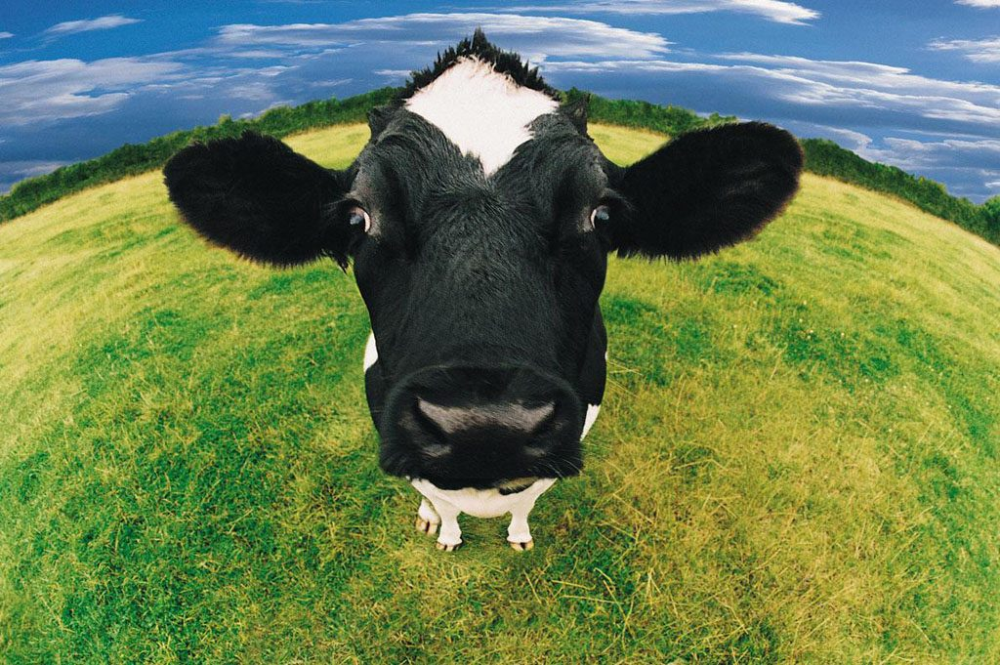
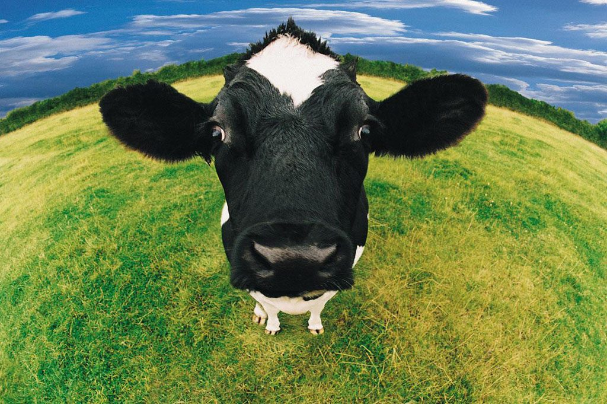

ANIMAIS
variações de animais

O reino animal é dividido em diversos filos. Os principais são: poríferos, cnidários, platelmintos, nematódeos ou nematelmintos, anelídeos, equinodermos, moluscos, artrópodes e cordados.
para que os cavalos servem?
Além de transporte do ser humano, o cavalo é usado no transporte de cargas e no trabalho com o gado. Nos dias atuais, é muito usado também em: hipismo, adestramento, polo, salto, vaquejada e rodeio.
para que servem as vacas?
Bem alimentadas, as vacas produzem leite e carne nutritivos e deliciosos. Além disso, as fezes delas são ricas em matéria orgânica e inorgânica, e, por isso, servem como excelentes fertilizantes para a plantação.
 
